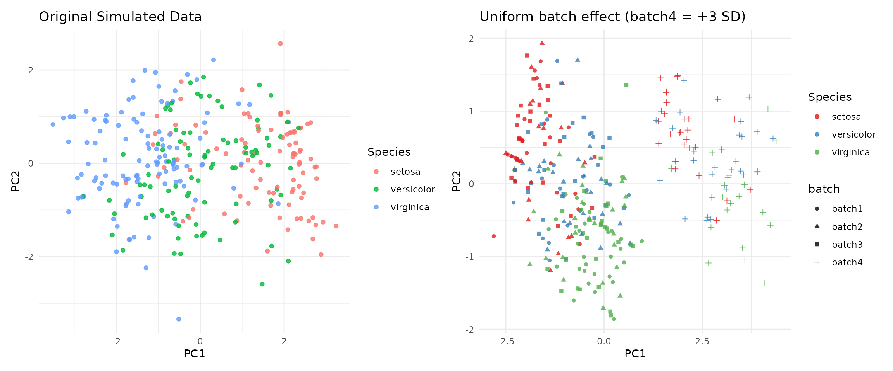

Two post-processors stamp designed structure onto an already-clean
synthetic dataset (a data.frame or a
synthetica_sim). They share the same additive, SD-unit
shift mechanism but model different things:
-
add_batch_effect()– a technical / nuisance batch factor (the “which plate was this run on” structure), for stress-testing batch-correction. -
add_group_effect()– a designed biological grouping factor whose levels are genuinely nominal (each perturbs its own features in its own way).
We start from a baseline synthetic iris:
syn <- simulate_dataset(iris, n = 300, seed = 42, verbose = FALSE)Technical batch effects
Uniform shifts: the outlier-plate scenario
shifts as a numeric vector of length
n_batches moves every target feature in a batch by
the same SD-multiple. Here three batches are indistinguishable and the
fourth is shifted hard – the classic outlier plate:
batched <- add_batch_effect(syn, n_batches = 4,
shifts = c(0, 0, 0, 3), seed = 42)
table(batched$data$batch)
#>
#> batch1 batch2 batch3 batch4
#> 75 75 75 75
## syn data PCA
num_syn <- syn$data[, vapply(syn$data, is.numeric, logical(1))]
pca_syn <- prcomp(num_syn, scale. = TRUE)$x
df_syn <- data.frame(pca_syn, Species = syn$data$Species)
p1 = ggplot(df_syn, aes(x = PC1, y = PC2, color = Species)) +
geom_point(alpha = 0.8) +
labs(title = "Original Simulated Data") +
theme_minimal()
### batched data PCA
num_batched <- batched$data[, vapply(batched$data, is.numeric, logical(1))]
pca_batched <- prcomp(num_batched, scale. = TRUE)$x
df_batched <- data.frame(pca_batched, batch = batched$data$batch, Species = batched$data$Species)
p2 = ggplot(df_batched, aes(x = PC1, y = PC2, color = Species, shape = batch)) +
geom_point(alpha = 0.8) +
labs(title = "Uniform batch effect (batch4 = +3 SD)",
x = "PC1", y = "PC2") +
theme_minimal() +
scale_color_brewer(palette = "Set1") # Clean, distinct colors for your 4 batches
p1 | p2
Spike-and-slab: realistic heterogeneous shifts
Real batch effects do not hit every feature equally.
shifts = "spike_slab" draws a per-feature shift for each
batch – hit ~ Bernoulli(shift_prob) then
N(0, shift_sd) – leaving a clean
reference_batch. proportions gives unequal
batch sizes. This is the realistic ’omics signature and scales to wide
matrices.
batched_ss <- add_batch_effect(
syn,
n_batches = 4,
shifts = "spike_slab",
shift_prob = 0.5, # per feature probability being shifted
shift_sd = 1, # the SD shift
proportions = c(0.4, 0.3, 0.2, 0.1), # relative size of each batch; sums to 1
reference_batch = 1,
seed = 6
)
cat("Batch sizes\n")
#> Batch sizes
table(batched_ss$data$batch) # unequal sizes
#>
#> batch1 batch2 batch3 batch4
#> 120 90 60 30
cat("\nSift Matrix: Batch by featuer in SD units of shift from reference\n\n")
#>
#> Sift Matrix: Batch by featuer in SD units of shift from reference
round(batched_ss$batch_effect$shift_matrix, 2) # ground-truth shifts (row 1 = clean)
#> Sepal.Length Sepal.Width Petal.Length Petal.Width
#> batch1 0.00 0.00 0.00 0.00
#> batch2 0.00 0.00 0.74 -0.11
#> batch3 0.00 -0.59 0.00 0.29
#> batch4 0.07 -0.81 0.00 -0.27The recorded shift_matrix is the ground truth: hand the
batched data to a correction method and check how well it recovers the
unshifted values.
Designed group effects (nominal)
add_group_effect() adds a named grouping factor whose
levels move different features in different directions – a genuinely
nominal factor that the single-latent copula could not produce
(categorical phenotype injection can only do an ordinal
gradient). Two ways to specify the effect.
Explicit: hand-tuned, non-monotone
A named list keyed by level, each a named numeric of per-feature shifts (SD units). Omitted level = reference; omitted feature = 0. Here clay has small petals while silt has wide sepals – two different features, no ordering:
g <- add_group_effect(
syn, name = "soil", levels = c("clay", "sand", "silt"),
probs = c(0.5, 0.3, 0.2), # relative size of each batch; sums to 1
effects = list(clay = c(Petal.Length = -0.9),
silt = c(Sepal.Width = 1.0)),
seed = 3
)
cat("Median Petal Length by Soil type\n")
#> Median Petal Length by Soil type
tapply(g$data$Petal.Length, g$data$soil, median) # clay is low
#> clay sand silt
#> 2.89773 4.50000 4.50000
cat("\nMedian Sepal Width by Soil type\n")
#>
#> Median Sepal Width by Soil type
tapply(g$data$Sepal.Width, g$data$soil, median) # silt is high
#> clay sand silt
#> 3.000000 3.000000 3.420095Generative: scales to ’omics widths
A named-list matrix is infeasible for an 11,000-feature panel. The generative mode says “each level perturbs a proportion of features at some effect-size distribution” – spike-and-slab drawn independently per level, so each level gets its own random signature:
## Generate a fake omics data set
omics <- as.data.frame(matrix(rnorm(300 * 500), 300, 500,
dimnames = list(NULL, paste0("p", 1:500))))
## Define a new variable `tissue` and add group effects
gg <- add_group_effect(
omics, name = "tissue",
levels = c("liver", "muscle", "fat"),
probs = c(0.5, 0.3, 0.2), # relative size of each batch; sums to 1
effect_prop = 0.10, ## probability that a feature is effected
effect_sd = 0.5,
seed = 42
)
## Number of features effected by each level
cat("Number of features influenced by each feature:\n")
#> Number of features influenced by each feature:
rowSums( attr(gg, "group_effect")$shift_matrix != 0) # ~50 of 500 features per level
#> liver muscle fat
#> 56 50 49Because each level draws its own random subset, the perturbed feature sets barely overlap between levels – the defining property of a nominal factor. Affected feature marginals become mixtures across groups, which is intended: the group genuinely changes the distribution.